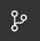
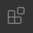
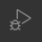
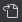
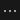
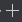
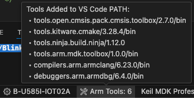

User Interface
The CMSIS Solution extension provides the Keil Studio GUI for project management and build tools with the CMSIS-Toolbox. Combined with other Arm and third-party extensions, it implements a powerful embedded development environment.

The GUI consists of these views:
| View | Description |
|---|---|
| Explorer view lists all local files. | |
 |
Search view enables search/replace across all files. |
|  | Source Control view allows you to work with git. |
|  | Extensions view lets you work with VS Code extensions. |
|  | Run and Debug view switches the GUI to a dedicated debug view. |
 |
CMSIS view is the main view for working with CMSIS solution-based projects. |
 |
Trace and Live view shows trace and live data during debugging. |
Note
The ordering of the icons may be different in your VS Code environment.
CMSIS view
The CMSIS view  shows the content of the active projects included in the
solution. Each project contains configuration settings, source code files, build settings, and other project-specific
information. The main area of the CMSIS view shows:
shows the content of the active projects included in the
solution. Each project contains configuration settings, source code files, build settings, and other project-specific
information. The main area of the CMSIS view shows:
- Board and device information and related documentation.
- Groups and files: Groups and user files that you add to the project and that you can edit
- constructed-files: Contains generated files such as the
RTE_Components.hheader file for each context - linker: Contains a linker script file and a <regions>.h file (or other user-defined header files)
- Components: Shows the software components selected for the project with their source files, user code templates, and APIs. Click the files to open them in the editor. Click the book icon of a component to open the related documentation. If you are using a generator to configure your device or board, then a Run Configuration Generator option is available to start a generator session.
- Layer Type (if available): The software layers in the project with their source files, preconfigured software components, and configuration files
Actions available through the CMSIS view
| Action | Description |
|---|---|
| Build solution calls the compiler toolchain and builds the solution. | |
| Load & Run application flashes the binary onto the target and starts the application. | |
| Load & Debug application flashes the binary onto the target and starts a debug session. | |
|  | Open csolution.yml file opens the CMSIS solution YML file for editing. |
| Open the Manage Solution view to configure project and debug settings. | |
|  | Show further commands. |
Main area icons
Depending on the file and the context, various icons may appear:
| Action | Description |
|---|---|
| IntelliSense is active for this cproject file. | |
| Open the file. | |
| Manage the software components of the cproject file. | |
|  | Add groups or files to the cproject file. |
Configuration Wizard
Configuration Wizard annotations enable GUI-like elements in IDEs for configuration source files. This graphical approach makes it easier for users to review and edit configuration settings as required by the application.
For files containing configuration wizard annotations, open the graphical view by pressing the Open Preview button
 in the top right corner of the file window.
in the top right corner of the file window.
The view will be opened next to the original source file. You can switch back pressing the Show Source button
 .
.

Status bar
The VS Code status bar displays information about the status of your development environment and the project.
-
Status message of the clangd extension that provides smart features.
-
You can inspect errors and warnings for the active csolution project when you move the cursor over the Target Set in the status bar. The indicator is red for errors and yellow for warnings. Click the indicator to open the Output - CMSIS Solution panel and the Manage Solution view.

-
The Arm Tools Environment Manager extension downloads, installs, and manages software development tools. Move your mouse over Arm Tools to review the current list of installed tools. Click Arm Tools to get more options.
 -
If you are using licensed Arm tools, the active license displays. Click the active license to manage it.
Run and Debug view
Refer to the Debugger user interface section for more information.
Available commands
You can access commands to manage your solution and the related projects in the following ways:
- From the CMSIS view.
- With right-click to the
*.csolution.ymlfile in the Explorer view. - With the Command Palette that opens with Ctrl+Shift+P (Windows and Linux) or Cmd+Shift+P (macOS).
| Command | Description |
|---|---|
| Open Solution in Workspace... | If your workspace contains several solutions, select the active solution to work with. |
| Create Solution... | Create a new csolution project. |
| Convert a µVision project to CMSIS solution... | Convert uvprojx files to csolution project format. |
| Close Solution | Close the current active solution. |
| Manage Solution Settings | Configure the target set (active target, projects, images, and debug adapter) for the solution. |
| Configure Solution | Set a compiler and add software layers. |
| Manage Software Components | Review, add, or remove software components. |
| Build solution | Build the solution with the current target set. |
| Rebuild solution | Rebuild the solution with the current target set. |
| Clean all out and tmp directories | Clean all out and tmp directories for the active solution. |
| Refresh (reload packs, update RTE) | Reload information from all installed packs and run cbuild setup update-rte. |
| Load & Run application | Load the application to target and run it with active GDB server (Debugger can be attached). |
| Load & Debug application | Load the application to target and start the debugger. |
| Erase target device | Erase the target device. |
| Load application to target | Load the application to target. |
| Run application on target | Run the current application in the target with active GDB server (Debugger can be attached). |
| Target Information | Show information about debug adapter and target. |
| Focus on Solution View | Open the CMSIS view. |